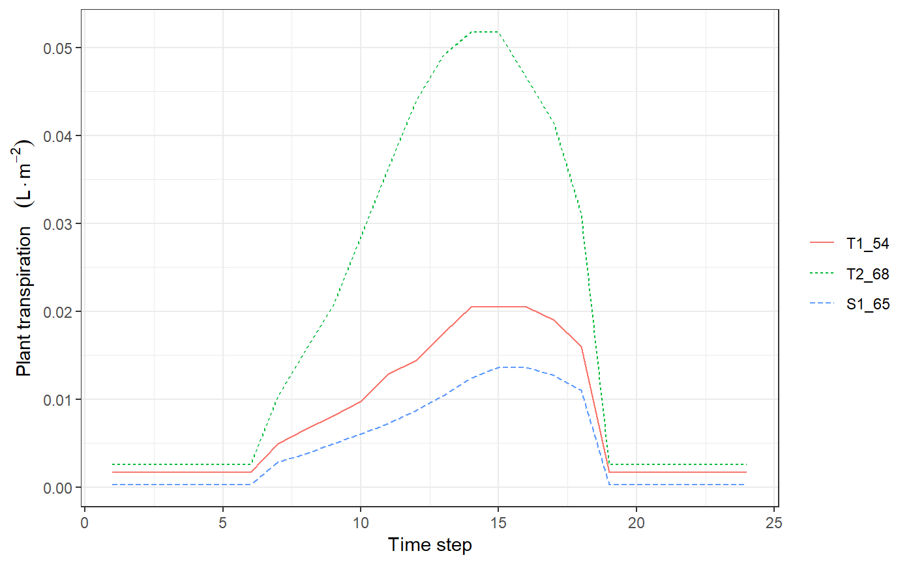

spwb_day.RdFunction spwb_day performs water balance for a single day.
spwb_day(x, soil, date, tmin, tmax, rhmin, rhmax, rad, wind, latitude, elevation, slope, aspect, prec, runon = 0.0)
| x | An object of class |
|---|---|
| soil | A list containing the description of the soil (see |
| date | Date as string "yyyy-mm-dd". |
| tmin, tmax | Minimum and maximum temperature (in degrees Celsius). |
| rhmin, rhmax | Minimum and maximum relative humidity (in percent). |
| rad | Solar radiation (in MJ/m2/day). |
| wind | Wind speed (in m/s). |
| prec | Precipitation (in mm). |
| latitude | Latitude (in degrees). Required when using the 'Sperry' transpiration mode. |
| elevation, slope, aspect | Elevation above sea level (in m), slope (in degrees) and aspect (in degrees from North). Required when using the 'Sperry' transpiration mode. |
| runon | Surface water amount running on the target area from upslope (in mm). |
Detailed model description is available in the vignettes section. The model using 'Granier' transpiration mode is described in De Caceres et al. (2015). Simulations using the 'Sperry' transpiration mode are computationally much more expensive.
An object (a list) of class spwb_day with the following elements:
"cohorts": A data frame with cohort information, copied from spwbInput.
"WaterBalance": A vector of water balance components (rain, snow, net rain, infiltration, ...) for the simulated day, equivalent to one row of 'WaterBalance' object given in spwb.
"Soil": A data frame with results for each soil layer:
"SoilEvaporation": Water evaporated from the soil surface (in mm).
"HydraulicInput": Water entering each soil layer from other layers, transported via plant hydraulic network (in mm) (only for transpirationMode = "Sperry").
"HydraulicOutput": Water leaving each soil layer (going to other layers or the transpiration stream) (in mm) (only for transpirationMode = "Sperry").
"PlantExtraction": Water extracted by plants from each soil layer (in mm).
"psi": Soil water potential (in MPa).
"EnergyBalance": When using the 'Sperry' transpiration mode, the model performs energy balance of the stand and 'EnergyBalance' is returned (see transp_transpirationSperry).
"Plants": A data frame of results for each plant cohort (see transp_transpirationGranier or transp_transpirationSperry).
"RhizoPsi": Minimum water potential (in MPa) inside roots, after crossing rhizosphere, per cohort and soil layer.
"ExtractionInst": Water extracted by each plant cohort during each time step.
"PlantsInst": A list with instantaneous (per time step) results for each plant cohort (see transp_transpirationSperry).
De Cáceres M, Martínez-Vilalta J, Coll L, Llorens P, Casals P, Poyatos R, Pausas JG, Brotons L. (2015) Coupling a water balance model with forest inventory data to predict drought stress: the role of forest structural changes vs. climate changes. Agricultural and Forest Meteorology (doi:10.1016/j.agrformet.2015.06.012).
Objects x and soil are modified during the simulation. Daily transpiration and photosynthesis values are stored in columns Transpiration and Photosynthesis of object x. Water content relative to field capacity (vector W) of soil is also modified.
#Load example daily meteorological data data(examplemeteo) #Load example plot plant data data(exampleforest) #Default species parameterization data(SpParamsMED) #Initialize control parameters control = defaultControl() #Initialize soil with default soil params (2 layers) examplesoil = soil(defaultSoilParams(2), W=c(0.5,0.5)) #Simulate one day only x1 = forest2spwbInput(exampleforest,examplesoil, SpParamsMED, control) d = 100 sd1<-spwb_day(x1, examplesoil, rownames(examplemeteo)[d], examplemeteo$MinTemperature[d], examplemeteo$MaxTemperature[d], examplemeteo$MinRelativeHumidity[d], examplemeteo$MaxRelativeHumidity[d], examplemeteo$Radiation[d], examplemeteo$WindSpeed[d], latitude = 41.82592, elevation = 100, slope=0, aspect=0, prec = examplemeteo$Precipitation[d]) #Initialize soil with default soil params (2 layers) examplesoil2 = soil(defaultSoilParams(2)) #Switch to 'Sperry' transpiration mode control$transpirationMode="Sperry" #Simulate one day only x2 = forest2spwbInput(exampleforest,examplesoil2, SpParamsMED, control)#> Warning: Soil pedotransfer functions set to Van Genuchten ('VG').d = 100 sd2<-spwb_day(x2, examplesoil2, rownames(examplemeteo)[d], examplemeteo$MinTemperature[d], examplemeteo$MaxTemperature[d], examplemeteo$MinRelativeHumidity[d], examplemeteo$MaxRelativeHumidity[d], examplemeteo$Radiation[d], examplemeteo$WindSpeed[d], latitude = 41.82592, elevation = 100, slope=0, aspect=0, prec = examplemeteo$Precipitation[d]) #Plot plant transpiration (see function 'plot.swb.day()') plot(sd2)